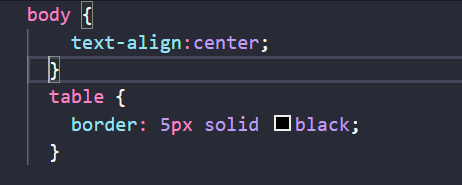

Ha nem akarsz olvasni, mehetünk a footerre is.
További linkek:
A front-end webfejlesztők azok, akik a weboldal felhasználói felületéért felelnek.
Ők azok, akik az alkalmazások és weboldalak különböző részeinek kinézetét, kezelőfelületét
és felépítését tervezik és implementálják.
A frontend fejlesztők általában HTML, CSS és JavaScript nyelveket használnak a munkájuk során.
A webfejlesztők olyan szakemberek, akik különböző technológiák segítségével létrehozzák és karbantartják
az internetes alkalmazásokat és weboldalakat. A webfejlesztők általában több különböző területen is
jártasak, mint például a front-end, a back-end és az adatbázis-kezelés.
A front-end webfejlesztők azok, akik a weboldal felhasználói felületéért felelnek.
Ők azok, akik az alkalmazások és weboldalak különböző részeinek kinézetét, kezelőfelületét és
felépítését tervezik és implementálják. A frontend fejlesztők általában HTML, CSS és JavaScript nyelveket
használnak a munkájuk során.
A back-end webfejlesztők azok, akik az alkalmazások és weboldalak mögötti logikát és adatbázis-kezelést
kezelik. Ők a szerveroldali programozással foglalkoznak, amelynek funkciója az adatok továbbítása és a
felhasználók weboldallal kapcsolatos interakciójának tökéletesítése. A back-end fejlesztők gyakran olyan
programozási nyelveket használnak, mint a Java, a Python vagy a PHP.
Az adatbázis-kezelők azok, akik az alkalmazások és weboldalak adatbázisainak tervezésével és kezelésével
foglalkoznak. Az adatbázis-kezelők felelősek az adatbázis-tervezésért, az adatok betöltéséért, az adatok
lekérdezéséért és a felhasználói jogosultságok kezeléséért.
Összességében a webfejlesztők fontos szerepet töltenek be a digitális világban. Ők azok, akik lehetővé teszik, hogy a webalkalmazások és weboldalak működjenek, és a felhasználók számára intuitív és kényelmes élményt nyújtsanak.
A webdesigner és a webfejlesztő két különböző szakma a webalkalmazások és weboldalak fejlesztésében. Bár a
két szakma hasonló területeken dolgozik, mint például a HTML, a CSS és a JavaScript programozási nyelvek, a
feladatok és a felelősségi körök mégis eltérőek.
A webdesignerek elsősorban a weboldalak külsejének és felhasználói felületének kialakításával foglalkoznak.
Ők azok, akik meghatározzák a weboldalak színeit, betűtípusait, elrendezését és azokat a funkciókat, amelyekkel a
felhasználók interakcióba léphetnek. A webdesignerek általában grafikai tervezők és/vagy UX/UI designerek, akiknek meg
kell érteniük a felhasználói élményt és a tervezési alapelveket, valamint a webes technológiákat.
A webfejlesztők azonban olyan programozók, akik a webalkalmazások és weboldalak fejlesztésével foglalkoznak, a webalkalmazások
és weboldalak működésének megértésére és azok fejlesztésére összpontosítanak. A webfejlesztőknek jártasnak kell lenniük a
programozási nyelvekben, például a HTML-ben, a CSS-ben és a JavaScriptben, valamint a szerveroldali nyelvekben, mint például
a PHP vagy a Python. Az adatbázisokkal és a webszerverekkel is foglalkoznak.
Bár mindkét szakma hasonló területeken dolgozik, a webdesignereknek inkább a vizuális és kreatív aspektusokra, míg a webfejlesztőknek
az alkalmazások és weboldalak működésére kell koncentrálniuk. A webdesignerek általában a tervezők, míg a webfejlesztők
inkább a programozók közé tartoznak.
Röviden tehát az a lényeg, hogy a webdesignerek a weboldalak külsejének és felhasználói felületének kialakításával foglalkoznak,
míg a webfejlesztők az alkalmazások és weboldalak fejlesztésére és működésére összpontosítanak.
Egy web design projekt általában a következő lépésekből áll:
1. Briefing: az első lépés az ügyféllel folytatott megbeszélés, ahol a webdesigner megérti az ügyfél igényeit, marketing céljait,
stíluspreferenciáit és elvárásait a weboldal tervezése és kialakítása terén. A briefing során a webdesigner és az ügyfél közös megegyezésre jut,
hogy milyen tartalmakat kell elkészíteni, milyen funkciókat kell beépíteni és milyen stílust kell alkalmazni a weboldal elkészítéséhez.
2. Kutatás és tervezés: a webdesigner ezt követően kutatást végez a piac trendjeiről, az ügyfél célcsoportjáról, a tartalmakról, és elkezdi kialakítani
a terveket, vázlatokat és wireframe-eket. Ebben a fázisban már kiválasztják a színeket, a tipográfiát és az egyéb design elemeket is, amelyek alapján
kialakítják az első konkrét terveket.
3. Design és vizuális elemek: a tervezési fázis után a webdesigner elkezdi kialakítani a vizuális elemeket, mint például a logót, ikonokat, és egyéb elemeket.
A webdesigner az ügyfél igényei alapján, a célcsoport számára igényes és vonzó grafikai megjelenést teremt.
4. Fejlesztés: a kialakított design alapján elkezdik a weboldal fejlesztését. Az alkalmazott technológiától függően ez a folyamat több fázisra oszlik.
Az elkészült weboldal több platformon, különböző eszközökön tesztelésre kerül, hogy mindenhol jól nézzen ki és megfelelően működjön.
5. Tartalombeillesztés: miután az alapvető weboldal elkészült, az ügyfél által szolgáltatott tartalmakat (szöveg, képek, videók stb.) be kell illeszteni
a megfelelő helyekre. A tartalomnak összhangban kell lennie a designnal és a funkciókkal.
6. Tesztelés és javítás: azt követően, hogy az összes tartalom bekerült a weboldalra, a webdesigner teszteli a weboldalt, hogy biztos legyen benne,
hogy minden jól működik. Az általános tesztelés mellett a webdesigner teszteli a weboldalt különböző böngészőkben és készülékeken is. Amennyiben talál
valamilyen hibát, azokat kijavítja és optimalizálja a honlapot.
A kép címe: CSS kód
